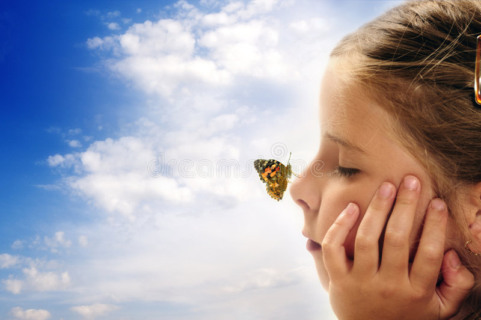
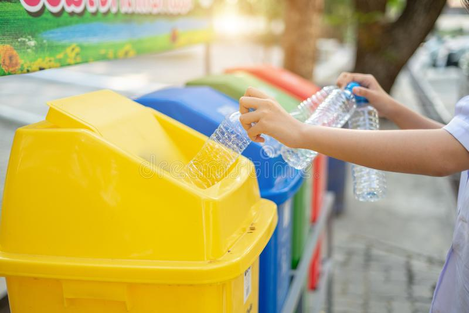

GREEN EARTH

A clean environment is essential for the existence of all living beings.Everyone should give priority to the ‘save the environment’
Child Enviroment
A child born today has a much better chance of reaching their fifth birthday than ever before. But climate change and environmental degradation threaten to reverse progress on child and adolescent
Protect Enviroment
Environmental protection is the practice of protecting the natural environment by individuals, organizations and governments Its objectives are to conserve
Spread Enviroment
Information on the environment for those involved in developing, adopting, implementing and evaluating environmental policy, and also the general public.
We are committed to protect and enhance our enviroment
The basic components of the environment are atmosphere or the air, lithosphere or the rocks and soil, hydrosphere or the water, and the living component of the environment or the biosphere. the thick gaseous layer surrounding the earth. It spreads up to 300 km.The physical component refers to the non-living part of the environment. These are also called abiotic factors and include air, water, soil, climate etc.The four major components of environment include lithosphere, hydrosphere, atmosphere and biosphere, corresponding to rocks, water, air and life respectively. •.Environmental ecology is divided into two components. One is the biotic component that is known as components of organisms.